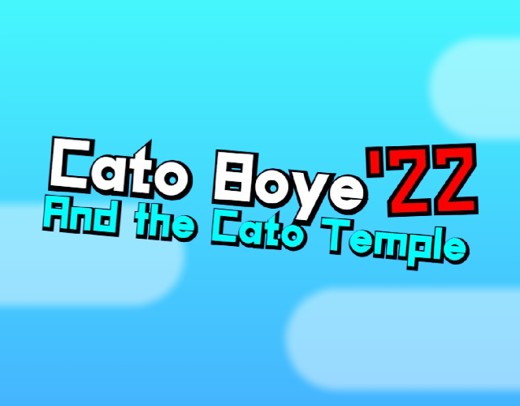

ùÜï Bossa Bossa - Kevin MacLeod~
Scratch Projects
This page basically just dedicated to my games & projects that was made in Scratch/Turbowarp.Games
POZZ
(and the adventure of game)
(totally not ripoff to Catto Boi Game Simulator)
POZZ (and the adventure of game)(totally not ripoff to Catto Boi Game Simulator) is a joke game based on Catto Boi Game Simulator. For an old site of Pozz's Domain Site.

Development Status: Finished! (No further updates planned.)
Creature Sandbox

A "Ragdoll" Game with bunch of doodle creatures like YIPPEE/TBH Creature.
Development Status: On Hold (Busy)
Cato Boye '22
(CBGS: Salt's Take)

My take on Catto Boi Game Simulator with added characters from CBGS Sightings page.
Development Status: Finished! (Planned Update, Hiatus)